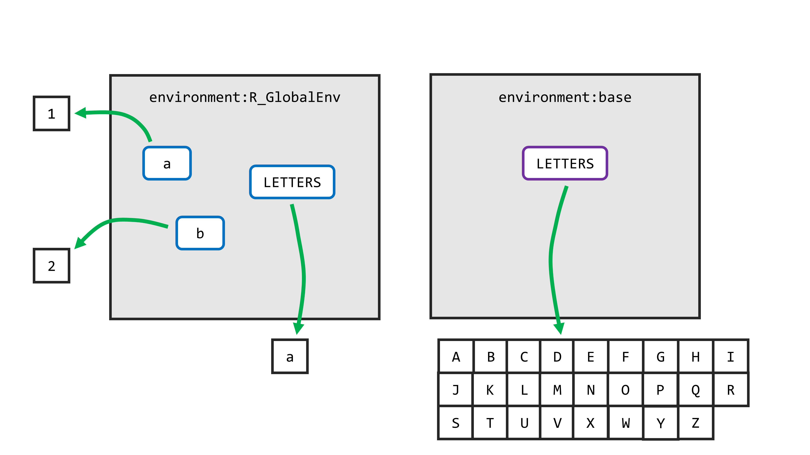
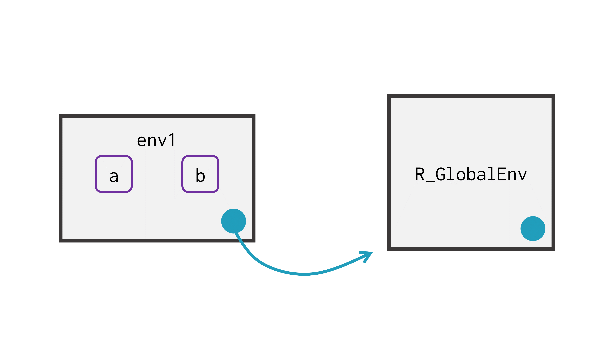
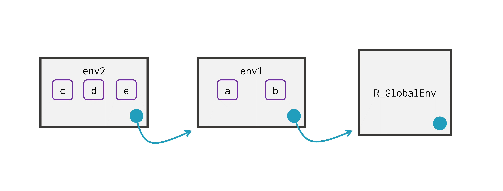
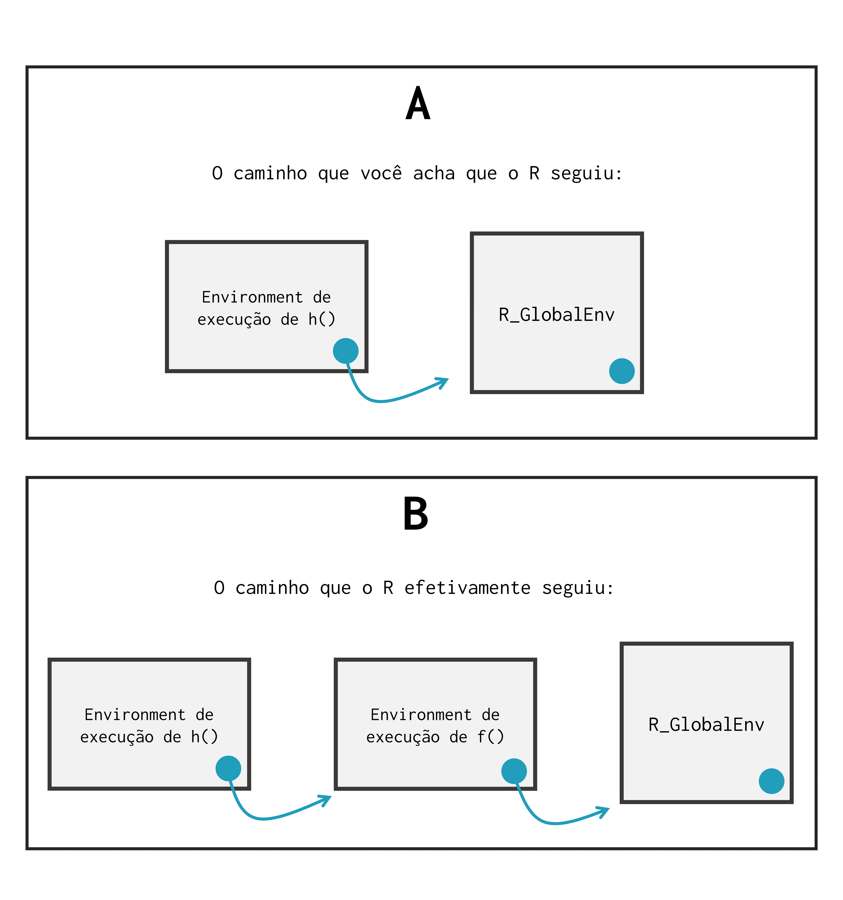

library(rlang)18 Environments ou ambientes no R
18.1 Introdução
Todo objeto existente no R está armazenado em um environment (ou ambiente) específico. Como é destacado por WICKHAM (2015) os environments são a estrutura de dados que sustenta o processo de scoping do R, isto é, as regras de “busca” por objetos da linguagem R.
Compreender o que é um environment é algo bastante simples. Porém, entender como os vários environments ativos em sua sessão funcionam em conjunto, representa um outro nível de dificuldade. Mesmo assim, environments são estruturas muito importantes para a linguagem R, e que sustentam grande parte das operações realizadas pelos pacotes dplyr e ggplot2.
Além disso, environments são parte fundamental da reprodutibilidade dos programas criados pela linguagem R. Pois eles são as estruturas responsáveis por garantir que os diferentes componentes de seu programa sejam únicos e independentes entre si.
Ao longo deste capítulo vamos utilizar algumas funções do pacote rlang. Sendo assim, para que você possa acompanhar alguns dos exemplos a seguir, é necessário que esse pacote esteja instalado em sua máquina.
18.2 Noções básicas de environments
Para além de uma linguagem que trabalha com objetos, o R é também uma linguagem que trabalha com objetos que estão contidos (ou guardados) em certos environments. Um environment (ou ambiente) no R, é muito parecido com uma lista nomeada. Cada nome presente nessa lista, corresponde ao nome de um objeto que está armazenado nesse respectivo environment.
Segundo WICKHAM (2015), todo environment carrega algumas propriedades:
Todos os nomes em um environment são únicos (isso garante que dois ou mais objetos de mesmo nome não existam dentro de um mesmo environment);
Os nomes presentes em um environment não são ordenados;
Todo environment possui um environment “pai”;
Um environment é modificado in place (ou seja, ele não é copiado quando ele é modificado).
Quando estamos trabalhando com um determinado objeto, geralmente nos referimos a este objeto através de seu nome, contudo, o nome é apenas parte desta referência, pois objetos existem dentro de um determinado contexto, ou escopo. Portanto, no R, uma referência completa a um determinado objeto, é na verdade, a combinação entre o nome deste objeto e o environment no qual ele está inserido (CHAMBERS, 2016).
18.3 Descobrindo o environment atual
Independentemente de onde você esteja dentro do R, você sempre é capaz de identificar qual é o environment atual através da função environment(). Basta executar essa função, e, o endereço do environment no qual você está será retornado como resultado.
Perceba abaixo que, ao executar essa função em minha sessão atual do R, o endereço R_GlobalEnv é retornado. Normalmente, environments são identificados através do endereço da memória RAM no qual eles estão localizados. Contudo, esse valor R_GlobalEnv representa um apelido para um environment especial do R, chamado de global environment. Vamos discutir esse environment na próxima seção.
environment()## <environment: R_GlobalEnv>Em termos mais técnicos, o que a função environment() faz é retornar o endereço do environment no qual ela é executada. Portanto, o resultado dessa função depende diretamente de onde você a executa.
Logo, se o comando environment() está sendo executado dentro do body de uma função chamada f, o resultado será o environment de execução dessa função f. Mas, se você executar esse comando diretamente no seu console do R, o resultado será diferente.
18.4 O environment global
Normalmente, quando digitamos o nome de um determinado objeto, nós não estamos preocupados com o environment no qual este objeto está guardado. Pois o próprio R realiza o trabalho duro de procurar por este objeto ao longo de todos os environments ativos em sua sessão, atrás de um objeto que possua o mesmo nome que você digitou. Tal mecanismo de procura é denominado de scoping ou de lexical scoping (WICKHAM, 2015), e ele geralmente se inicia pelo seu global environment.
Toda vez que você inicia a sua sessão no R, você está trabalhando com um environment especial que chamamos de global environment, ou ambiente global. Logo, todos os objetos que você normalmente cria em sua sessão, são guardados dentro deste global environment.
Você pode se referir a esse environment através da função globalenv(). Como exemplo, eu posso usar a função ls() para listar os nomes de todos os objetos que estão disponíveis especificamente neste global environment. Como vimos na seção passada, o endereço desse environment é referenciado como R_GlobalEnv.
globalenv()<environment: R_GlobalEnv># Iniciei uma nova sessão no R
# Criei alguns objetos
a <- 1
b <- 2
# ls() lista todos os objetos criados
# em meu global environment
ls(envir = globalenv())## [1] "a" "b"Portanto, um environment é uma espécie de caixa ou um espaço reservado para guardar um certo conjunto de objetos. O seu global environment é um desses environments, onde ficam todos os seus objetos que você normalmente cria em sua sessão. Todavia, sempre existem vários outros environments ativos em sua sessão, e você também pode criar objetos dentro desses outros environments (caso seja de seu desejo).
18.5 O environment de execução de uma função
Toda função no R, possui o que nós chamamos de function environment, que corresponde ao environment no qual elas foram criadas. No exemplo abaixo, estamos identificando quais são esses environments para as funções filter() do pacote dplyr, e seq() do pacote base.
rlang::fn_env(dplyr::filter)<environment: namespace:dplyr>rlang::fn_env(seq)<environment: namespace:base>Como um outro exemplo, caso eu crie uma nova função em minha sessão, perceba que o environment a qual ela pertence, se trata justamente do global environment (R_GlobalEnv).
soma <- function(x, y){
return(x + y)
}
rlang::fn_env(soma)## <environment: R_GlobalEnv>Por outro lado, se eu quiser, por exemplo, criar uma função chamada g dentro de uma outra função chamada h, o function environment de g() será o environment de execução de h(). Pois a função g() foi criada dentro deste environment de h().
h <- function(){
g <- function(){
print(5)
}
g_env <- rlang::fn_env(g)
return(g_env)
}
h()<environment: 0x58cf208da2c0>Portanto, as funções também possuem o que chamamos de environment de execução, que se trata do environment no qual os seus cálculos são executados. Ou seja, sempre que você executa uma função, os cálculos realizados por essa função são feitos em um environment separado de seu global environment.
Como expomos ao final do capítulo de Funções, quando uma função é executada, um novo environment vazio é criado. Em seguida, um objeto para cada argumento fornecido à função é criado dentro desse novo environment. Por último, todos os comandos presentes no body dessa função são executados dentro desse novo environment (CHAMBERS, 2016, p. 52).
Por esse motivo, você não consegue visualizar com facilidade, os resultados que são gerados por essa função, pois os seus cálculos estão sendo realizados em um environment diferente do environment no qual você se encontra (global environment).
Em contrapartida, essa característica garante que uma função não afete os objetos de seu global environment. Isso também permite que uma função do R seja self-contained, de modo que, os seus resultados dependam apenas dos valores de seus argumentos, e não dos objetos de outros environments presentes em sua sessão (CHAMBERS, 2016).
Para demonstrar esse conceito de environment de execução, estou criando abaixo uma função chamada f_env, que nos retorna justamente o endereço do environment no qual essa função executou a soma entre 4 e 5. Perceba que a cada momento em que eu executo essa função, ela me retorna um endereço diferente.
Logo, esses environments de execução são temporários (ou efêmeros se preferir), e utilizados uma única vez pela função. Por causa disso, no R, cada execução de uma função é independente uma da outra. A função não sabe absolutamente nada sobre o que aconteceu na última vez em que ela foi avaliada.
f_env <- function(){
soma <- 4 + 5
env <- environment()
return(env)
}
f_env()<environment: 0x58cf20e83b40>f_env()<environment: 0x58cf20f6b080>O exemplo abaixo, demonstra essa ideia de que os environments de execução asseguram que toda função não altere os nossos objetos salvos em nosso global environment. Dentro da função f() mostrada abaixo, estou criando um objeto chamado y com o valor de 100. Porém, mesmo após executar essa função, o objeto y que está salvo em meu global environment continua armazenando o valor 1.
### Crie um objeto y em meu global environment
y <- 1
f <- function(){
y <- 100
}
### Executo a função f()
f()
### O valor de y continua igual a 1
print(y)[1] 118.5.1 Os environments de pacotes
Portanto, o trabalho de um environment no R, é o de vincular, ou de associar um conjunto de nomes (os nomes dos objetos), a seus respectivos conjuntos de valores (WICKHAM, 2015, Cáp. 7). Ou seja, um dos principais papéis que um environment desempenha no R, é o de organizar um conjunto de objetos, de forma que o R seja capaz de diferenciar dois ou mais objetos com o mesmo nome.
Um bom exemplo disso, é a função filter() do pacote dplyr, que vimos no capítulo 4. Pois nós temos dentre os pacotes básicos do R, mais especificamente no pacote stats, uma outra função também chamada filter(). Por isso, sempre que chamamos pelo pacote dplyr através de library(), a seguinte mensagem aparece, nos informando que há um choque entre as duas funções.
library(dplyr)Attaching package: ‘dplyr’
The following objects are masked from ‘package:stats’:
filter, lagEssa mensagem está nos informando, que o pacote dplyr possui funções com os mesmos nomes das funções filter() e lag() do pacote stats, e, que por esse motivo, essas funções seriam “escondidas” de forma a evitar conflitos.
Portanto, após carregarmos o pacote dplyr com library(), as funções filter() e lag() do pacote stats são “escondidas”. Como resultado, se nós chamarmos pela função filter() no console, estaremos utilizando a função do pacote dplyr, e não a função do pacote stats.

Portanto, essas duas funções filter(), são funções diferentes, que servem para propósitos diferentes. O único fator que permite ao R, diferenciar essas funções uma da outra, é o fato de que elas pertencem a ambientes, ou environments diferentes, como demonstrado na Figura 18.1. Lembre-se que todas as funções estão associadas a um environment específico. Por isso, nós podemos diferenciar as funções filter() e lag() de ambos os pacotes (dplyr e stats), através do nome do environment ao qual essas funções pertencem.
Pacotes do R são um caso especial, pois eles contêm dois environments diferentes que se relacionam entre si. Um é o environment propriamente dito do pacote, que contém os seus respectivos objetos, e um outro comumente chamado de namespace. Essa diferenciação só será útil na prática, quando você estiver desenvolvendo um novo pacote para o R.
Ou seja, não se preocupe em entender agora a diferença entre esses dois espaços. Apenas entenda que, pacotes no R, vão além de simples environments. Também entenda que, os objetos e funções de todo pacote do R estão sempre armazenados no environment deste pacote, o qual é um environment separado de seu global environment.
Tendo isso em mente, quando desejamos utilizar uma função que está em conflito com uma outra função de um outro pacote, nós devemos definir de alguma forma, o environment do pacote no qual o R deve procurar pela função que você está chamando.
No caso de pacotes, podemos acessar funções definidas em seus respectivos environments, ao fornecer o nome do pacote que contém essa função, seguido do operador ::, e do nome da função que desejamos utilizar. Veja o exemplo abaixo, em que estamos utilizando a função filter() do pacote stats.
x <- ts(rnorm(100), start = c(1, 1990), end = c(4, 1998), frequency = 12)
stats::filter(x, filter = c(0.5, 0.8, 0.2)) Jan Feb Mar Apr May
166
167 -0.521652457 0.288679545 0.357363761 0.189136199 0.512888717
168 1.025315929 -0.008626853 -0.805855578 0.473984326 -0.192164343
169 -0.875673533 -0.078710120 -0.551113642 0.383794104 2.056333336
170 -0.779275572 0.287376069 1.172226141 1.375027658 0.875187484
Jun Jul Aug Sep Oct
166 NA
167 0.883772307 0.502891827 0.566576854 1.016966016 -0.556151454
168 -1.721288722 -1.231294885 -0.782290006 -0.527011340 -0.182809083
169 1.540795431 0.663096525 0.023953127 -0.009203929 -0.546564600
170 NA
Nov Dec
166 1.166079935 -0.172345025
167 -0.790527234 0.525434683
168 0.011024679 -0.614595715
169 -1.686797998 -1.558951331
170 18.6 Acessando outros environments
Já mostramos que você pode acessar o environment atual através da função environment(). Também mostramos que você pode acessar o seu global environment por meio da função globalenv(). Agora, a questão que fica é: como podemos acessar outros environments que estão presentes no caminho de pesquisa do R?
Por exemplo, como podemos acessar o environment do pacote dplyr? Para isso podemos utilizar as funções as.environment() e rlang::as_environment(). Ambas as funções desempenham basicamente o mesmo trabalho. Utilizando essas funções, podemos acessar o environment do pacote dplyr ao fornecer o nome de seu environment, como demonstrado abaixo.
Perceba que, se você utilizar a função as.environment() (dos pacotes básicos do R), você precisa fornecer o nome completo do environment. Por se tratar do environment de um pacote, o nome deste pacote precisa ser antecedido por package:. Por outro lado, a função rlang::as_environment() é inteligente o suficiente para pesquisar por um pacote com o nome que você digitou.
as.environment("package:dplyr")<environment: package:dplyr>
attr(,"name")
[1] "package:dplyr"
attr(,"path")
[1] "/home/pedro-dev/R/x86_64-pc-linux-gnu-library/4.4/dplyr"rlang::as_environment("dplyr")<environment: package:dplyr>
attr(,"name")
[1] "package:dplyr"
attr(,"path")
[1] "/home/pedro-dev/R/x86_64-pc-linux-gnu-library/4.4/dplyr"Como um outro exemplo, vamos refletir sobre o objeto LETTERS. Esse objeto está sempre disponível em sua sessão no R. Pois ele pertence ao environment do pacote base (o qual faz parte dos pacotes básicos da linguagem, e, portanto, é sempre carregado para a sua sessão).
Vamos supor que eu crie um novo objeto chamado LETTERS em meu global environment. Como resultado, se eu procurar por este objeto no console do R, o objeto encontrado será este novo objeto salvo em meu global environment. Pois o processo de busca do R geralmente se inicia pelo global environment.
### Este é o objeto LETTERS salvo no
### *environment* do pacote `base`
LETTERS [1] "A" "B" "C" "D" "E" "F" "G" "H" "I" "J" "K" "L" "M" "N" "O" "P" "Q" "R" "S"
[20] "T" "U" "V" "W" "X" "Y" "Z"### Estou criando um novo objeto LETTERS em
### meu global environment
LETTERS <- "a"
### Agora, se eu procurar por um objeto
### LETTERS, o R vai encontrar primeiro o objeto
### salvo em meu global environment
LETTERS[1] "a"Vale destacar que, o objeto LETTERS original, ainda existe dentro do environment do pacote base. A única diferença é que, antes de chegar ao environment do pacote base, o R está encontrando primeiro o objeto LETTERS salvo em meu global environment. Logo, ele retorna esse objeto contendo o valor "a", ao invés do objeto original.
Pelo fato de termos dois objetos LETTERS diferentes em nossa sessão, para acessarmos o objeto LETTERS original, precisamos definir o environment no qual o R deve pesquisar por este objeto. Como este objeto LETTERS pertence a um pacote do R, podemos utilizar a mesma estrutura que utilizamos para acessar a função filter() do pacote stats, como demonstrado abaixo.
base::LETTERS [1] "A" "B" "C" "D" "E" "F" "G" "H" "I" "J" "K" "L" "M" "N" "O" "P" "Q" "R" "S"
[20] "T" "U" "V" "W" "X" "Y" "Z"Contudo, como uma outra alternativa, também podemos utilizar a função get() para especificarmos melhor, qual dos dois objetos desejamos acessar. Pois essa função possui um argumento (envir) onde podemos definir o environment em que o objeto deve ser pesquisado.
Como exemplo, para acessarmos o objeto LETTERS original, precisamos pesquisar por ele dentro do environment do pacote base. Por isso, eu forneço abaixo, o environment deste pacote ao argumento envir.
get("LETTERS", envir = as.environment("package:base")) [1] "A" "B" "C" "D" "E" "F" "G" "H" "I" "J" "K" "L" "M" "N" "O" "P" "Q" "R" "S"
[20] "T" "U" "V" "W" "X" "Y" "Z"Portanto, mesmo que eu crie um objeto em minha sessão, ou em outras palavras, um objeto em meu global environment chamado LETTERS, o R ainda é capaz de diferenciar os dois objetos denominados LETTERS, através do environment ao qual eles estão associados. Esta ideia está apresentada de forma visual na Figura 18.2.

Após criarmos um novo objeto LETTERS, se eu chamar por este objeto no console, o resultado será o valor contido no objeto LETTERS do meu global environment. Isso ocorre, pois o R irá geralmente procura por um objeto primeiro em seu global environment. Depois ele vai procurar por este objeto ao qual você requisitou em outros environments.
Esse caminho de environments pelo qual o R percorre durante sua procura, é comumente chamado por search path (ou “caminho de busca”). Como vimos acima, podemos utilizar a função get() sempre que desejamos contornar esse caminho padrão seguido pelo R, e, pesquisar por nosso objeto em um environment específico.
Concluindo, nós geralmente desejamos acessar um environment específico, quando temos dois objetos existentes em nossa sessão que possuem o mesmo nome, porém, são diferentes entre si. Nesse caso, precisamos unir o nome deste objeto, e o environment ao qual ele pertence, para acessarmos o objeto correto.
Caso esse objeto em questão, pertença a um pacote do R específico, podemos utilizar a estrutura pacote::objeto para acessarmos esse objeto. No entanto, se esse objeto pertence a um outro tipo de environment, podemos utilizar a função get() e seu argumento envir, para definirmos em que environment específico, o objeto deve ser pesquisado.
18.7 O sistema de scoping do R
Sempre que você digita o nome de um objeto, o R inicia um processo de busca ao longo de todos os environments ativos em sua sessão, atrás de um objeto que possua o mesmo nome do que você digitou. Esse processo de busca é chamado de scoping, ou, lexical scoping.
Antes de explicar como esse mecanismo de busca funciona, precisamos descrever o que é um parent environment. Pois eles determinam qual o caminho que o R vai perseguir durante a sua pesquisa.
18.7.1 Compreendendo parent environments
Todo environment possui um environment “pai”. Dentro da comunidade, esse tipo de environment é chamado de parent environment. Como exemplo, vamos supor que você crie um novo environment a partir de seu global environment.
Para criar um novo environment, você pode utilizar as funções rlang::env() e new.env(). Perceba abaixo, que eu não apenas crio esse novo environment chamado env1, mas eu também já adiciono dois novos objetos (a e b) a esse environment. Esses objetos a e b guardam os valores 1 e 2, respectivamente.
env1 <- rlang::env(a = 1, b = 2)Como eu não defini explicitamente dentro da função rlang::env(), um parent environment para esse novo environment, a função vai, por padrão, criar esse novo environment a partir do environment atual, isto é, o environment no qual essa função foi chamada. No exemplo acima, esse environment atual é o global environment, porque eu estou executando a função diretamente em meu console do R.


Por esse motivo, o parent environment de env1 é o meu global environment. Eu posso representar essa relação de maneira visual, como na Figura 18.3. Cada retângulo nessa figura é um environment específico. Em todas as figuras a seguir, o environment filho vai estar sempre apontando para o environment pai com uma seta azul.
Como um outro exemplo, eu posso criar um outro enviroment chamado env2. Porém, dessa vez, esse environment é criado a partir de env1. Ou seja, env1 se torna o parent environment de env2. Repare que eu crio 3 novos objetos (e, d e c) dentro desse novo environment.
env2 <- rlang::env(env1, c = 3, d = 4, e = 5)Para descobrir o parent environment de um environment qualquer, você pode utilizar a função parent.env(). Veja no exemplo abaixo que, o resultado do comando parent.env(env2) é justamente o endereço de env1.
parent.env(env2)<environment: 0x58cf21834df0>env1<environment: 0x58cf21834df0>Caso eu aplique essa função sobre env1, podemos confirmar que o meu global environment é de fato o pai desse environment.
parent.env(env1)## <environment: R_GlobalEnv>Sendo assim, podemos atualizar a nossa representação visual da seguinte maneira:
Vale destacar que, a Figura 18.4 acima não mostra um parent environment para o meu global environment, mas isso não significa que esse environment não existe. Eu apenas o omiti acima, para manter a figura simples. Lembre-se sempre que, todo environment possui um parent environment. Como exemplo, perceba abaixo que, o parent environment de meu global environment é (neste momento) o environment do pacote dplyr, que foi o último pacote que eu carreguei para a minha sessão.
parent.env(globalenv())## <environment: package:dplyr>
## attr(,"name")
## [1] "package:dplyr"
## attr(,"path")
## [1] "C:/Users/Pedro/Documents/R/win-library/4.1/dplyr"Nos manuais internos do R, o parent environment é muitas vezes chamado de enclosing environment, isto é, o ambiente que “envolve” ou que “contém” os demais environments (TEAM, 2020). Ou seja, de certa forma, o environment env1 envolve ou contém env2 dentro dele, e, o meu global environment contém env1.
18.7.2 O environment vazio ou empty environment
Eventualmente, toda sequência de environments termina em um environment vazio (ou empty environment). Em outras palavras, se você começar a subir pela árvore genealógica de seus environments, seguindo parent environment atrás de parent environment, você vai eventualmente chegar a um empty environment. Que é um tipo especial de environment, pois ele é a exceção à regra de que todo environment possui um pai.
Portanto, um empty environment é identificado pelo apelido R_EmptyEnv e, ele não possui um parent environment. Você pode acessar esse environment através da função emptyenv().
emptyenv()<environment: R_EmptyEnv>Você pode comprovar a afirmação do parágrafo acima, ao tentar aplicar a função parent.env() sobre esse environment. Perceba abaixo que um erro é retornado, avisando que esse environment não possui um environment “pai”.
parent.env(emptyenv())## Error in parent.env(emptyenv()) : the empty *environment* has no parentTendo isso em mente, esse environment vazio representa o final de toda sequência de environments. De certa maneira, esse environment é o último parent environment de todos. Assim que o R atinge esse environment, ele encerra o seu processo de pesquisa, pois ele não tem mais para onde ir.
Se você refletir sobre isso, você pode chegar a conclusão de que, se o R chegar a esse environment vazio durante o seu processo de pesquisa, isso significa que o R não pôde encontrar o objeto que você requisitou. Pois ao chegar a esse environment vazio, o R já vai ter visitado todos os outros environments ativos em sua sessão.
18.7.3 O caminho de busca ou search path do R
Para encontrar o objeto pelo qual você requisitou, o R visita environment por environment, em busca desse objeto, até atingir um empty environment. A lista de environments que o R visita durante esse processo de pesquisa, é chamada de search path (ou, o caminho de pesquisa). Você pode descobrir qual é esse search path, através da função search().
Basta executar essa função, que um vetor contendo os nomes de todos esses environments será retornado como resultado. Vale destacar que, os nomes desses environments vão estar precisamente na ordem em que eles são visitados, durante este processo de pesquisa.
Perceba abaixo que, o environment .GlobalEnv (que é um outro apelido para o global environment) é o primeiro da lista. Logo, o seu global environment é o primeiro environment visitado pelo R. Por outro lado, o environment do pacote base é o último environment visitado.
search()## [1] ".GlobalEnv" "tools:rstudio" "package:stats"
## [4] "package:graphics" "package:grDevices" "package:utils"
## [7] "package:datasets" "package:methods" "Autoloads"
## [10] "package:base"Portanto, o search path do R sempre segue essa mesma estrutura. Ele sempre se inicia pelo seu global environment, seguido dos environments dos pacotes que estão carregados em sua sessão, que por sua vez, são seguidos pelo environment Autoloads e pelo environment do pacote base.
O environment Autoloads é basicamente responsável por carregar algumas bases de dados padrão do R. Porém, tais bases são carregadas de maneira lazy (preguiçosa), isto é, essas bases são carregadas para a memória RAM apenas no momento em que você efetivamente requisita por elas.
Já o environment do pacote base é sempre o último environment dessa lista. Isso significa que, após esse environment, temos um environment vazio que encerra o mecanismo de pesquisa do R, como está demonstrado abaixo.
parent.env(as.environment("package:base"))<environment: R_EmptyEnv>Podemos representar este caminho de maneira gráfica, como apresentado na Figura 18.5. Perceba que, pelo fato do environment do pacote base ser o último da lista resultante de search(), o seu parent environment é justamente um environment vazio.

18.7.4 Descrevendo o lexical scoping
Como descrevemos anteriormente, a linguagem R utiliza um conjunto de regras (chamadas de lexical scoping) para encontrar o valor de seus objetos. Nessa seção, vamos explicar em mais detalhes que regras são essas.
Primeiro, o R sempre inicia o seu processo de busca pelo environment em que você chamou por esse objeto. Por exemplo, se você está chamando por esse objeto, diretamente no console do R, então, você está chamando esse objeto a partir de seu global environment, logo, o R começa a sua pesquisa por este environment. Contudo, se você está chamando por esse objeto, dentro do body de uma função, então, o R vai procurar primeiro dentro do environment de execução dessa função.
Segundo, se o R não encontra o objeto em questão no primeiro environment pesquisado, ele começa a subir pela árvore genealógica de environments, até atingir o seu global environment. Ou seja, o R começa a procurar pelo objeto dentro do pai do primeiro environment pesquisado, depois, no pai do pai, e assim por diante.
Explicando ainda esse mesmo ponto, de uma outra forma: se o R não encontrar o seu objeto em um environment x, ele parte para o parent environment desse environment x, caso ele não encontre o objeto neste outro environment, então, ele parte novamente para o próximo parent environment, e assim segue, até ele chegar em seu global environment (TEAM, 2020, seç. 3.5.2 e 4.3.4).
Terceiro, a partir do momento em que o R atinge o seu global environment, o R começa a navegar pelo seu search path (TEAM, 2020, seç. 3.5.2). Ou seja, o R começa a subir pela sequência de environments descrita pela função search(). Então ele visita primeiro o seu global environment, depois, parte para os environments dos pacotes carregados em sua sessão, depois, para o environment Autoloads e o environment do pacote base.
Quarto, ao subir pelo seu search path, se o R atingir o empty environment (que é o pai do environment do pacote base), o processo de busca é encerrado, e o R retorna um erro, lhe avisando que o objeto não pôde ser encontrado.
Vamos para alguns exemplos práticos. Suponha que você possua a função f() apresentada abaixo salva em seu global environment. Perceba que dentro do body dessa função, temos dois objetos (x e y) que o R precisa encontrar, no momento em que executar essa função.
Quando essa função é avaliada, o R procura primeiro dentro do environment de execução dessa função. Pois é dentro desse environment que os objetos estão sendo chamados.
Dentro desse environment de execução, o R encontra o objeto y (que é igual a 10), porém, ele não consegue encontrar o objeto x. Consequentemente, o R parte para o pai do environment de execução da função, que no exemplo abaixo se trata do global environment. Ao chegar no global environment, o R encontra o vetor x e, por isso, tal vetor é utilizado pela função f().
x <- c(2, 5, 6, 1)
f <- function(){
y <- 10
return(x + y)
}
f()[1] 12 15 16 11Agora, vamos partir para um exemplo mais profundo. Observe o exemplo abaixo, e tente responder a seguinte pergunta: porque o resultado do comando h(3) mostrado abaixo é 13, e não 25?. Para responder a essa pergunta, vamos recapitular ou esclarecer alguns pontos a seguir.
y <- 15
f <- function() {
y <- 10
g <- function(x) x + y
return(g)
}
h <- f()
h(3)[1] 13Primeiro, vamos expor o caminho de environments que você (leitor) provavelmente achou que o R iria seguir durante o cálculo de h() (painel A), e, o caminho que ele efetivamente seguiu (painel B). Tais caminhos de environments estão expostos na Figura 18.6.

Pelo fato da função h() ter sido criada dentro do global environment, você provavelmente pressupôs que R_GlobalEnv fosse o parent environment do environment de execução dessa função. Porém, o parent environment de h() é na verdade o environment de execução da função f().
Pois o valor do objeto h (que está salvo no global environment) é a definição da função g(). Essa função g() foi criada dentro do environment de execução da função f(). Portanto, o parent environment da função que está armazenada dentro do objeto h é o environment de execução da função f().
Tendo isso em mente, lembre-se que toda função do R possui o que chamamos de function environment. Esse é o environment no qual essa função foi criada. Para mais, o function environment é sempre o pai do environment de execução dessa função.
Esse exemplo mostra que as conexões de todos os objetos envolvidos em uma expressão, são definidos no instante em que aquela expressão é criada. Os manuais internos da linguagem, destacam essa característica como um dos princípios fundamentais de lexical scope:
“R adheres to a set of rules that are called lexical scope. This means the variable bindings in effect at the time the expression was created are used to provide values for any unbound symbols in the expression.” (TEAM, 2020, seç. 4.3.4).
Isso significa que essas conexões não são calculadas pelo R, no momento em que executamos essa expressão, e, sim, no momento em que definimos ou criamos essa expressão. Em outras palavras, o parent environment da função h() foi determinado no momento em que a função g() foi criada, e não, no momento em que executamos a função h().
Concluindo, as regras que regem o lexical scoping no R são:
O R sempre inicia o seu processo de busca pelo environment no qual você requisitou pelo objeto;
Se ele não encontra o objeto no primeiro environment pesquisado, ele começa a percorrer os parent environments, até atingir o global environment;
Ao atingir o global environment, o R percorre o search path;
Ao atingir um empty environment, a procura é interrompida, e um erro é levantado indicando que o objeto não foi encontrado;
18.8 Criando objetos em outros environments.
Quando utilizamos o operador de assignment <- para criar um objeto, este objeto é sempre criado dentro do environment no qual você executou tal operador. Veja o exemplo abaixo.
Repare que dois objetos numéricos (x e y) estão sendo criados. Contudo, esses dois objetos estão sendo criados em environments diferentes. Mais especificamente, o objeto x é criado dentro do meu global environment, enquanto o objeto y é criado dentro do environment de execução da função f().
x <- 10
f <- function(){
y <- 100
}Portanto, você pode utilizar o body de uma função, para criar objetos em environments diferentes de seu global environments. Além disso, você já viu que a função rlang::env() te permite fornecer novos objetos para serem armazenados dentro do novo environment criado pela função. No exemplo abaixo, estou criando dois objetos (nome e ano) dentro do environment env1.
env1 <- rlang::env(nome = "Pedro", ano = 2022)Como uma outra alternativa, você pode também utilizar a função assign() quando desejar ser mais específico quanto ao environment em que o objeto deve ser criado. Em resumo, essa função executa o mesmo trabalho do operador de assignment (<-), todavia, essa função nos oferece o argumento envir, no qual podemos definir o environment no qual o objeto será criado.
Como exemplo, estou criando abaixo dois environments separados, env1 e env2. Repare que env1 é o parent environment de env2. A princípio, esses dois environments estão vazios.
env1 <- rlang::env()
env2 <- rlang::env(env1)Se eu desejasse criar um objeto dentro do environment env2, eu poderia utilizar a função assign() como exposto abaixo. Perceba que nesse exemplo, estou criando um objeto chamado x que contém o valor 10.
assign("x", 10, envir = env2)Depois de executar a função, podemos acessar o objeto x com o operador $, ou ainda, com a função get() que vimos em seções anteriores.
env2$x[1] 10get("x", envir = env2)[1] 10Para além dessas opções, você pode utilizar o operador de super-assignment (<<-) para redefinir um objeto presente no parent environment do environment atual. Como exemplo, vamos estudar as funções f() e g() abaixo.
Perceba que a função g() é criada dentro da função f(), logo, o parent environment da função g() é o environment de execução da função f(). Repare também que, dentro da função f() é criado um objeto chamado y, contendo inicialmente o valor 20.
Entretanto, a partir do momento em que a função g() é executada dentro da função f(), o valor do objeto y se torna igual a 1. Isso ocorre, pelo fato da função g() executar dentro dela, uma expressão de super-assignment, mais especificamente, a expressão y <<- 1.
f <- function(){
y <- 20
### Primeiro print()
print(y)
g <- function(){
y <<- 1
}
g()
### Segundo print()
print(y)
}
f()[1] 20
[1] 1Em mais detalhes, quando utilizamos o operador <<-, ao invés do R criar o objeto dentro do environment onde a expressão foi executada, ele inicia uma busca dentro do parent environment, atrás de um objeto que possua o mesmo nome do objeto contido nessa expressão.
Ou seja, ao executar a expressão y <<- 1, o R começou a procurar dentro do parent environment de g() (que no exemplo acima, é o environment de execução de f()), por um objeto chamado y. Ao encontrar o objeto y que guarda o valor de 20, o R redefine o seu valor para 1.
Portanto, em uma operação de super-assignment (<<-), o R procura pelo objeto envolvido na operação dentro do parent environment. Caso o R encontre esse objeto, ele vai redefinir o seu valor. Entretanto, se o R não encontrar esse objeto dentro do parent environment, então, ele vai criar (ou redefinir) esse objeto dentro de seu global environment.
Por exemplo, observe as funções f() e g() abaixo. O parent environment de g() continua sendo o environment de execução de f(). Porém, perceba que dessa vez, não existe um objeto y sendo definido dentro de f(). Para mais, repare que antes de eu executar a função f(), não existe nenhum objeto y salvo em meu global environment.
Em contrapartida, no instante em que eu executo a função f(), um novo objeto y contendo o valor 1 surge em meu global environment. Perceba que eu utilizo a função get() em conjunto com globalenv() para demonstrar que tal objeto foi encontrado dentro de meu global environment, e não em algum outro environment.
### Perceba que ainda não existe nenhum
### objeto chamado `y` em meu global environment
print(y)## Error in print(y) : object 'y' not foundf <- function(){
g <- function(){
y <<- 1
}
g()
}
f()
### Agora, como num passe de mágica
### surge um objeto chamado `y` em
### meu global environment
get("y", envir = globalenv())[1] 1Portanto, dessa vez, o R não conseguiu encontrar um objeto chamado y dentro do environment de f() e, por isso, ele acabou criando este objeto y dentro de meu global environment.